规定初始像素覆盖已通过独立数据验收，完整12步与物理安全未通过。Prescribed initial pixel coverage passes the independent DATA audit; full12-step and physical acceptance remain incomplete. Original1280×720; no edits/crop. Every image below is INITIAL, not micro1/final.
{"seed": 0, "proposal_id": 2645, "global_id": 8789, "family": 1}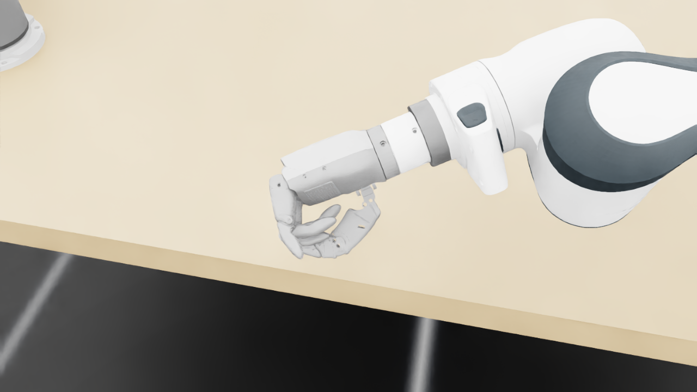
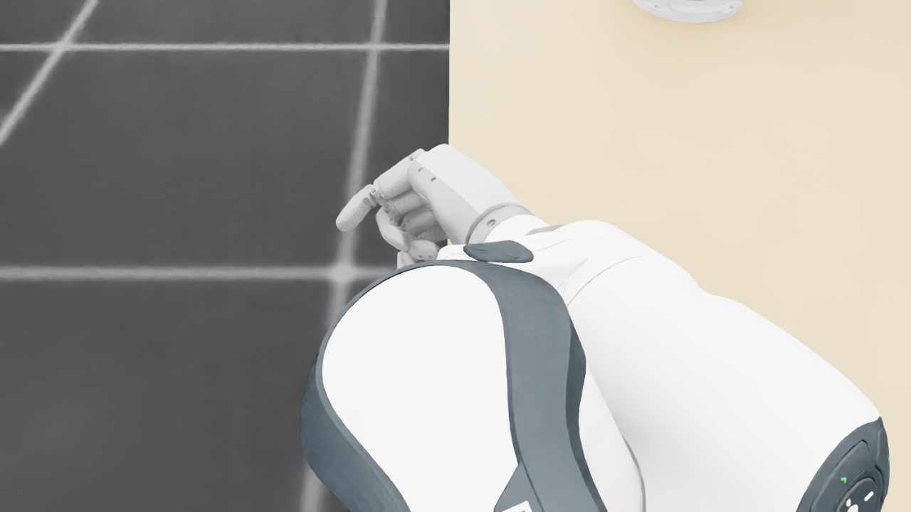
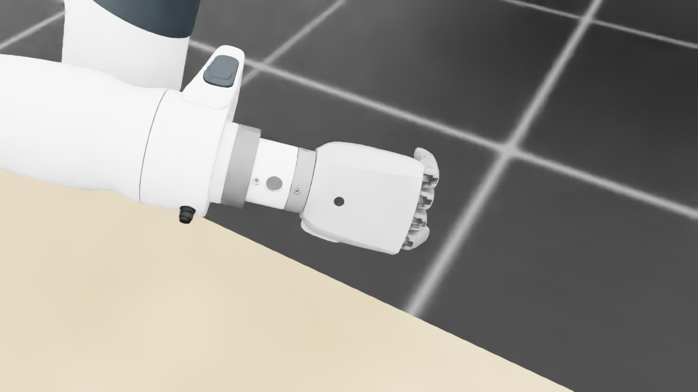
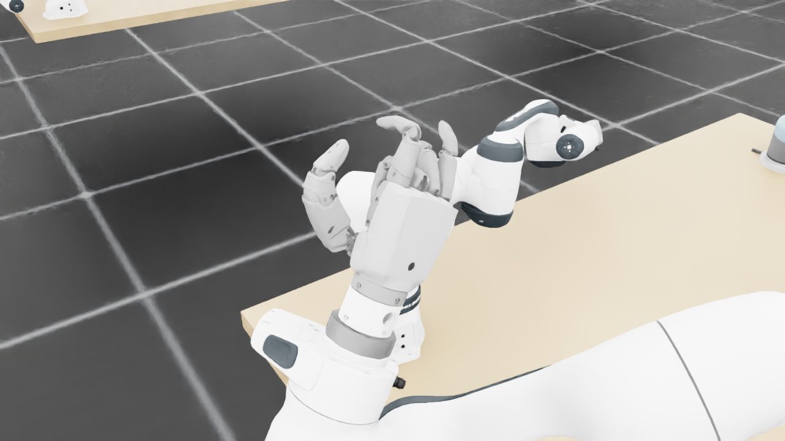
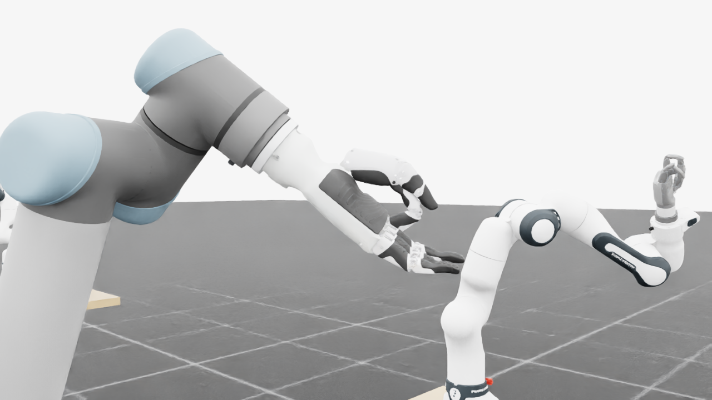
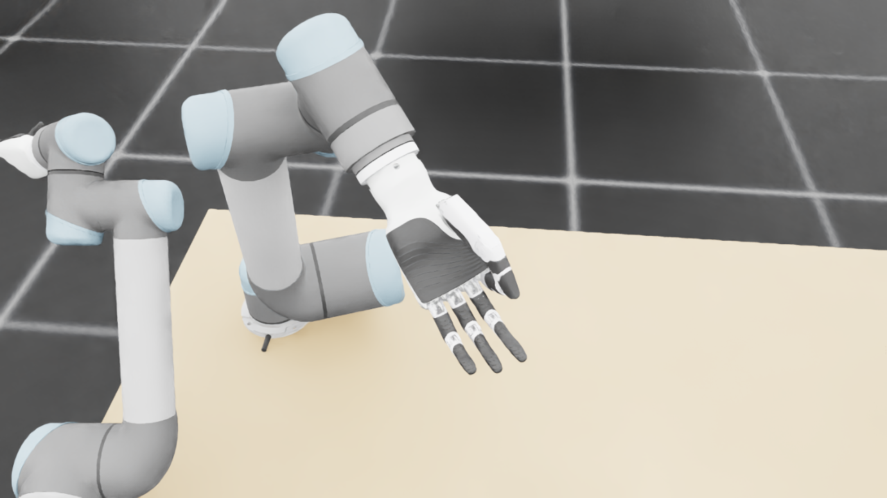
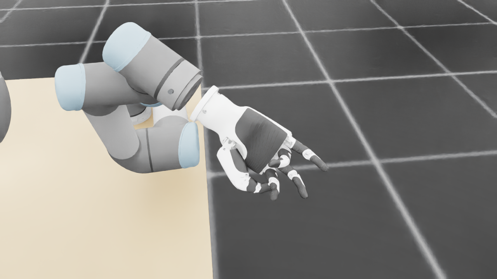
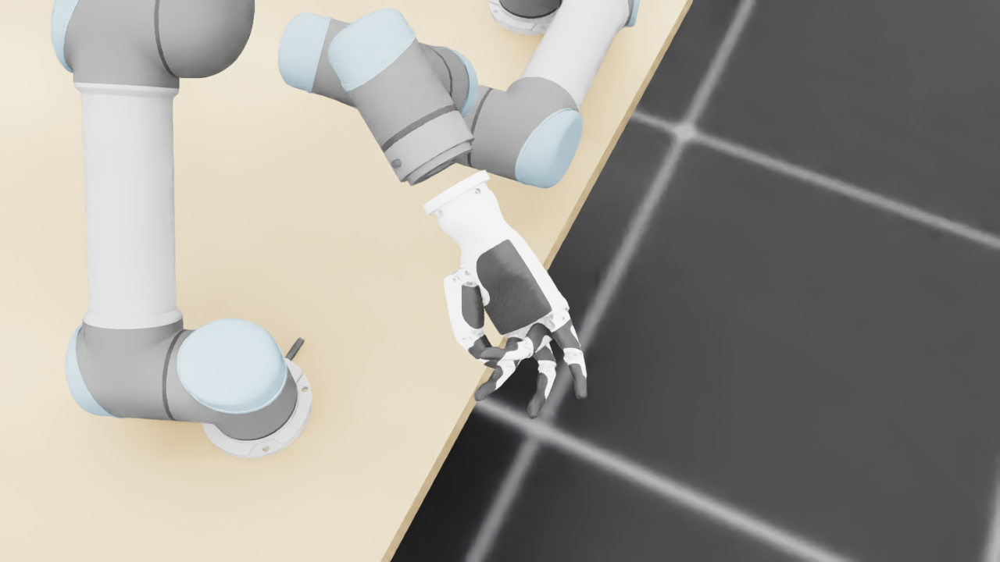
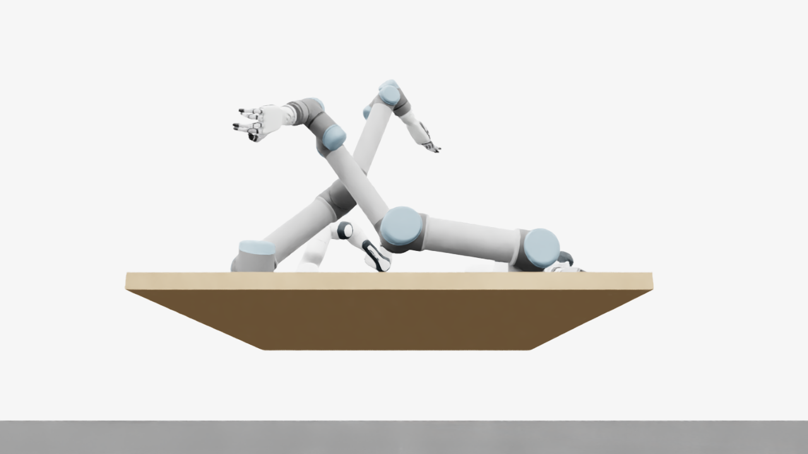
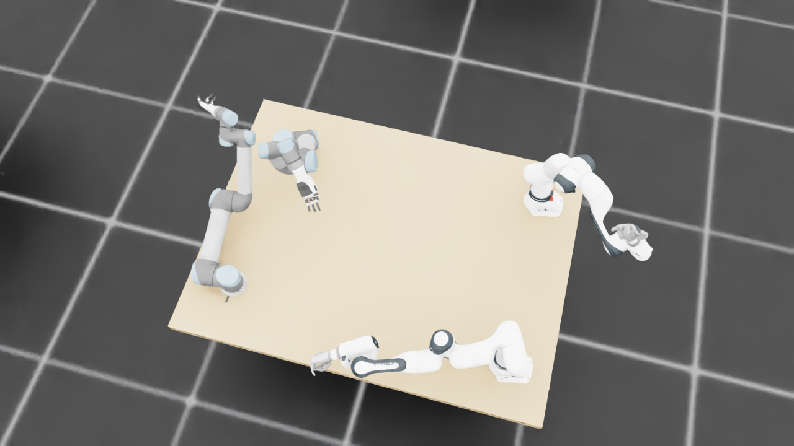
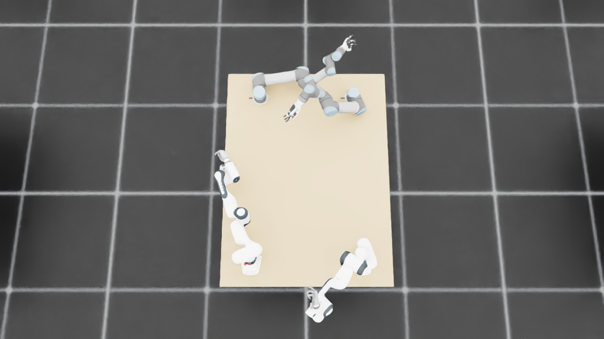
{
"qualified": true,
"arms": {
"F_L": {
"qualified": true,
"palm_visual_peak_pixels": 40017,
"finger_family_peak_pixels": {
"thumb": 7121,
"index": 1200,
"middle": 2597,
"ring": 2969,
"little": 4908
},
"per_native_body_peak_pixels": {
"/World/envs/env_3/F_L/f2_hand/left_hand_base": 48952,
"/World/envs/env_3/F_L/f2_hand/left_index_1": 1192,
"/World/envs/env_3/F_L/f2_hand/left_middle_1": 1379,
"/World/envs/env_3/F_L/f2_hand/left_pinky_1": 3184,
"/World/envs/env_3/F_L/f2_hand/left_ring_1": 1313,
"/World/envs/env_3/F_L/f2_hand/left_thumb_1": 595,
"/World/envs/env_3/F_L/f2_hand/left_index_2": 843,
"/World/envs/env_3/F_L/f2_hand/left_middle_2": 1218,
"/World/envs/env_3/F_L/f2_hand/left_pinky_2": 2071,
"/World/envs/env_3/F_L/f2_hand/left_ring_2": 1856,
"/World/envs/env_3/F_L/f2_hand/left_thumb_2": 4335,
"/World/envs/env_3/F_L/f2_hand/left_thumb_3": 1588,
"/World/envs/env_3/F_L/f2_hand/left_thumb_4": 603
},
"native_body_visibility_gaps": [],
"all_native_hand_bodies_observed": true,
"full_mesh_coverage_certified": false,
"all_recorded_attempt_peak": {
"qualified": false,
"palm_visual_peak_pixels": 40017,
"finger_family_peak_pixels": {
"thumb": 11789,
"index": 2859,
"middle": 3977,
"ring": 4167,
"little": 4908
},
"per_native_body_peak_pixels": {
"/World/envs/env_3/F_L/f2_hand/left_hand_base": 48952,
"/World/envs/env_3/F_L/f2_hand/left_index_1": 2027,
"/World/envs/env_3/F_L/f2_hand/left_middle_1": 1379,
"/World/envs/env_3/F_L/f2_hand/left_pinky_1": 3184,
"/World/envs/env_3/F_L/f2_hand/left_ring_1": 1313,
"/World/envs/env_3/F_L/f2_hand/left_thumb_1": 595,
"/World/envs/env_3/F_L/f2_hand/left_index_2": 1832,
"/World/envs/env_3/F_L/f2_hand/left_middle_2": 3497,
"/World/envs/env_3/F_L/f2_hand/left_pinky_2": 2071,
"/World/envs/env_3/F_L/f2_hand/left_ring_2": 3283,
"/World/envs/env_3/F_L/f2_hand/left_thumb_2": 6823,
"/World/envs/env_3/F_L/f2_hand/left_thumb_3": 2860,
"/World/envs/env_3/F_L/f2_hand/left_thumb_4": 1837
},
"native_body_visibility_gaps": [],
"all_native_hand_bodies_observed": true,
"full_mesh_coverage_certified": false,
"qualification": false
},
"attempts": 8,
"decoded": 8
},
"F_R": {
"qualified": true,
"palm_visual_peak_pixels": 26746,
"finger_family_peak_pixels": {
"thumb": 9267,
"index": 4670,
"middle": 3323,
"ring": 3606,
"little": 4083
},
"per_native_body_peak_pixels": {
"/World/envs/env_3/F_R/f2_hand/right_hand_base": 32570,
"/World/envs/env_3/F_R/f2_hand/right_index_1": 3051,
"/World/envs/env_3/F_R/f2_hand/right_middle_1": 1273,
"/World/envs/env_3/F_R/f2_hand/right_pinky_1": 2464,
"/World/envs/env_3/F_R/f2_hand/right_ring_1": 1837,
"/World/envs/env_3/F_R/f2_hand/right_thumb_1": 757,
"/World/envs/env_3/F_R/f2_hand/right_index_2": 1619,
"/World/envs/env_3/F_R/f2_hand/right_middle_2": 2050,
"/World/envs/env_3/F_R/f2_hand/right_pinky_2": 1619,
"/World/envs/env_3/F_R/f2_hand/right_ring_2": 1810,
"/World/envs/env_3/F_R/f2_hand/right_thumb_2": 4484,
"/World/envs/env_3/F_R/f2_hand/right_thumb_3": 2394,
"/World/envs/env_3/F_R/f2_hand/right_thumb_4": 2093
},
"native_body_visibility_gaps": [],
"all_native_hand_bodies_observed": true,
"full_mesh_coverage_certified": false,
"all_recorded_attempt_peak": {
"qualified": false,
"palm_visual_peak_pixels": 26746,
"finger_family_peak_pixels": {
"thumb": 9685,
"index": 4670,
"middle": 3697,
"ring": 3606,
"little": 4083
},
"per_native_body_peak_pixels": {
"/World/envs/env_3/F_R/f2_hand/right_hand_base": 32570,
"/World/envs/env_3/F_R/f2_hand/right_index_1": 3051,
"/World/envs/env_3/F_R/f2_hand/right_middle_1": 1273,
"/World/envs/env_3/F_R/f2_hand/right_pinky_1": 2464,
"/World/envs/env_3/F_R/f2_hand/right_ring_1": 1837,
"/World/envs/env_3/F_R/f2_hand/right_thumb_1": 819,
"/World/envs/env_3/F_R/f2_hand/right_index_2": 1619,
"/World/envs/env_3/F_R/f2_hand/right_middle_2": 2698,
"/World/envs/env_3/F_R/f2_hand/right_pinky_2": 1619,
"/World/envs/env_3/F_R/f2_hand/right_ring_2": 2141,
"/World/envs/env_3/F_R/f2_hand/right_thumb_2": 4832,
"/World/envs/env_3/F_R/f2_hand/right_thumb_3": 2394,
"/World/envs/env_3/F_R/f2_hand/right_thumb_4": 2093
},
"native_body_visibility_gaps": [],
"all_native_hand_bodies_observed": true,
"full_mesh_coverage_certified": false,
"qualification": false
},
"attempts": 6,
"decoded": 6
},
"U_L": {
"qualified": true,
"palm_visual_peak_pixels": 10394,
"finger_family_peak_pixels": {
"thumb": 8406,
"index": 2954,
"middle": 3238,
"ring": 2834,
"little": 4196
},
"per_native_body_peak_pixels": {
"/World/envs/env_3/U_L/wrist_3_link": 35888,
"/World/envs/env_3/U_L/left_index_1": 1752,
"/World/envs/env_3/U_L/left_little_1": 2648,
"/World/envs/env_3/U_L/left_middle_1": 1748,
"/World/envs/env_3/U_L/left_ring_1": 1527,
"/World/envs/env_3/U_L/left_thumb_1": 153,
"/World/envs/env_3/U_L/left_index_2": 1242,
"/World/envs/env_3/U_L/left_little_2": 1548,
"/World/envs/env_3/U_L/left_middle_2": 1490,
"/World/envs/env_3/U_L/left_ring_2": 1307,
"/World/envs/env_3/U_L/left_thumb_2": 5219,
"/World/envs/env_3/U_L/left_thumb_3": 2149,
"/World/envs/env_3/U_L/left_thumb_4": 895
},
"native_body_visibility_gaps": [],
"all_native_hand_bodies_observed": true,
"full_mesh_coverage_certified": false,
"all_recorded_attempt_peak": {
"qualified": false,
"palm_visual_peak_pixels": 11237,
"finger_family_peak_pixels": {
"thumb": 8406,
"index": 2954,
"middle": 3249,
"ring": 3249,
"little": 4196
},
"per_native_body_peak_pixels": {
"/World/envs/env_3/U_L/wrist_3_link": 35888,
"/World/envs/env_3/U_L/left_index_1": 1752,
"/World/envs/env_3/U_L/left_little_1": 2648,
"/World/envs/env_3/U_L/left_middle_1": 1748,
"/World/envs/env_3/U_L/left_ring_1": 1619,
"/World/envs/env_3/U_L/left_thumb_1": 153,
"/World/envs/env_3/U_L/left_index_2": 1242,
"/World/envs/env_3/U_L/left_little_2": 1548,
"/World/envs/env_3/U_L/left_middle_2": 1721,
"/World/envs/env_3/U_L/left_ring_2": 1630,
"/World/envs/env_3/U_L/left_thumb_2": 5219,
"/World/envs/env_3/U_L/left_thumb_3": 2149,
"/World/envs/env_3/U_L/left_thumb_4": 962
},
"native_body_visibility_gaps": [],
"all_native_hand_bodies_observed": true,
"full_mesh_coverage_certified": false,
"qualification": false
},
"attempts": 4,
"decoded": 4
},
"U_R": {
"qualified": true,
"palm_visual_peak_pixels": 13113,
"finger_family_peak_pixels": {
"thumb": 7978,
"index": 2209,
"middle": 2336,
"ring": 2173,
"little": 2892
},
"per_native_body_peak_pixels": {
"/World/envs/env_3/U_R/wrist_3_link": 36011,
"/World/envs/env_3/U_R/right_index_1": 1101,
"/World/envs/env_3/U_R/right_little_1": 1568,
"/World/envs/env_3/U_R/right_middle_1": 1504,
"/World/envs/env_3/U_R/right_ring_1": 1075,
"/World/envs/env_3/U_R/right_thumb_1": 439,
"/World/envs/env_3/U_R/right_index_2": 1108,
"/World/envs/env_3/U_R/right_little_2": 1324,
"/World/envs/env_3/U_R/right_middle_2": 1400,
"/World/envs/env_3/U_R/right_ring_2": 1113,
"/World/envs/env_3/U_R/right_thumb_2": 4818,
"/World/envs/env_3/U_R/right_thumb_3": 2041,
"/World/envs/env_3/U_R/right_thumb_4": 770
},
"native_body_visibility_gaps": [],
"all_native_hand_bodies_observed": true,
"full_mesh_coverage_certified": false,
"all_recorded_attempt_peak": {
"qualified": false,
"palm_visual_peak_pixels": 13113,
"finger_family_peak_pixels": {
"thumb": 8844,
"index": 2209,
"middle": 2647,
"ring": 2173,
"little": 2892
},
"per_native_body_peak_pixels": {
"/World/envs/env_3/U_R/wrist_3_link": 36011,
"/World/envs/env_3/U_R/right_index_1": 1101,
"/World/envs/env_3/U_R/right_little_1": 1568,
"/World/envs/env_3/U_R/right_middle_1": 1504,
"/World/envs/env_3/U_R/right_ring_1": 1075,
"/World/envs/env_3/U_R/right_thumb_1": 439,
"/World/envs/env_3/U_R/right_index_2": 1108,
"/World/envs/env_3/U_R/right_little_2": 1324,
"/World/envs/env_3/U_R/right_middle_2": 1400,
"/World/envs/env_3/U_R/right_ring_2": 1113,
"/World/envs/env_3/U_R/right_thumb_2": 5342,
"/World/envs/env_3/U_R/right_thumb_3": 2285,
"/World/envs/env_3/U_R/right_thumb_4": 917
},
"native_body_visibility_gaps": [],
"all_native_hand_bodies_observed": true,
"full_mesh_coverage_certified": false,
"qualification": false
},
"attempts": 4,
"decoded": 4
}
},
"wide": {
"qualified": true,
"per_native_object_peak_pixels": {
"/World/envs/env_3/F_L/fr3_link0": 1454,
"/World/envs/env_3/F_L/fr3_link1": 1970,
"/World/envs/env_3/F_L/fr3_link2": 3079,
"/World/envs/env_3/F_L/fr3_link3": 1328,
"/World/envs/env_3/F_L/fr3_link4": 2628,
"/World/envs/env_3/F_L/fr3_link5": 3085,
"/World/envs/env_3/F_L/fr3_link6": 1398,
"/World/envs/env_3/F_L/fr3_link7": 672,
"/World/envs/env_3/F_L/fr3_link8": 107,
"/World/envs/env_3/F_L/f2_hand/left_hand_base": 654,
"/World/envs/env_3/F_L/f2_hand/left_index_1": 0,
"/World/envs/env_3/F_L/f2_hand/left_middle_1": 13,
"/World/envs/env_3/F_L/f2_hand/left_pinky_1": 76,
"/World/envs/env_3/F_L/f2_hand/left_ring_1": 9,
"/World/envs/env_3/F_L/f2_hand/left_thumb_1": 7,
"/World/envs/env_3/F_L/f2_hand/left_index_2": 1,
"/World/envs/env_3/F_L/f2_hand/left_middle_2": 38,
"/World/envs/env_3/F_L/f2_hand/left_pinky_2": 45,
"/World/envs/env_3/F_L/f2_hand/left_ring_2": 48,
"/World/envs/env_3/F_L/f2_hand/left_thumb_2": 134,
"/World/envs/env_3/F_L/f2_hand/left_thumb_3": 31,
"/World/envs/env_3/F_L/f2_hand/left_thumb_4": 4,
"/World/envs/env_3/F_R/fr3_link0": 2029,
"/World/envs/env_3/F_R/fr3_link1": 1798,
"/World/envs/env_3/F_R/fr3_link2": 1310,
"/World/envs/env_3/F_R/fr3_link3": 1975,
"/World/envs/env_3/F_R/fr3_link4": 2867,
"/World/envs/env_3/F_R/fr3_link5": 2720,
"/World/envs/env_3/F_R/fr3_link6": 972,
"/World/envs/env_3/F_R/fr3_link7": 727,
"/World/envs/env_3/F_R/fr3_link8": 103,
"/World/envs/env_3/F_R/f2_hand/right_hand_base": 458,
"/World/envs/env_3/F_R/f2_hand/right_index_1": 46,
"/World/envs/env_3/F_R/f2_hand/right_middle_1": 62,
"/World/envs/env_3/F_R/f2_hand/right_pinky_1": 40,
"/World/envs/env_3/F_R/f2_hand/right_ring_1": 59,
"/World/envs/env_3/F_R/f2_hand/right_thumb_1": 24,
"/World/envs/env_3/F_R/f2_hand/right_index_2": 96,
"/World/envs/env_3/F_R/f2_hand/right_middle_2": 42,
"/World/envs/env_3/F_R/f2_hand/right_pinky_2": 44,
"/World/envs/env_3/F_R/f2_hand/right_ring_2": 83,
"/World/envs/env_3/F_R/f2_hand/right_thumb_2": 84,
"/World/envs/env_3/F_R/f2_hand/right_thumb_3": 48,
"/World/envs/env_3/F_R/f2_hand/right_thumb_4": 63,
"/World/envs/env_3/U_L/base_link": 96,
"/World/envs/env_3/U_L/shoulder_link": 2924,
"/World/envs/env_3/U_L/upper_arm_link": 6042,
"/World/envs/env_3/U_L/forearm_link": 5741,
"/World/envs/env_3/U_L/wrist_1_link": 337,
"/World/envs/env_3/U_L/wrist_2_link": 1068,
"/World/envs/env_3/U_L/wrist_3_link": 1618,
"/World/envs/env_3/U_L/left_index_1": 33,
"/World/envs/env_3/U_L/left_little_1": 106,
"/World/envs/env_3/U_L/left_middle_1": 47,
"/World/envs/env_3/U_L/left_ring_1": 60,
"/World/envs/env_3/U_L/left_thumb_1": 8,
"/World/envs/env_3/U_L/left_index_2": 12,
"/World/envs/env_3/U_L/left_little_2": 52,
"/World/envs/env_3/U_L/left_middle_2": 66,
"/World/envs/env_3/U_L/left_ring_2": 60,
"/World/envs/env_3/U_L/left_thumb_2": 141,
"/World/envs/env_3/U_L/left_thumb_3": 51,
"/World/envs/env_3/U_L/left_thumb_4": 32,
"/World/envs/env_3/U_R/base_link": 454,
"/World/envs/env_3/U_R/shoulder_link": 1701,
"/World/envs/env_3/U_R/upper_arm_link": 16380,
"/World/envs/env_3/U_R/forearm_link": 5436,
"/World/envs/env_3/U_R/wrist_1_link": 2310,
"/World/envs/env_3/U_R/wrist_2_link": 919,
"/World/envs/env_3/U_R/wrist_3_link": 2804,
"/World/envs/env_3/U_R/right_index_1": 196,
"/World/envs/env_3/U_R/right_little_1": 156,
"/World/envs/env_3/U_R/right_middle_1": 161,
"/World/envs/env_3/U_R/right_ring_1": 181,
"/World/envs/env_3/U_R/right_thumb_1": 7,
"/World/envs/env_3/U_R/right_index_2": 132,
"/World/envs/env_3/U_R/right_little_2": 134,
"/World/envs/env_3/U_R/right_middle_2": 193,
"/World/envs/env_3/U_R/right_ring_2": 69,
"/World/envs/env_3/U_R/right_thumb_2": 77,
"/World/envs/env_3/U_R/right_thumb_3": 131,
"/World/envs/env_3/U_R/right_thumb_4": 88,
"/World/envs/env_3/TableF": 102987,
"/World/envs/env_3/TableU": 94728
},
"arm_peak_pixels": {
"F_L": 16781,
"F_R": 13851,
"U_L": 17623,
"U_R": 29570
},
"table_peak_pixels": {
"TableF": 102987,
"TableU": 94728
},
"critical_body_peak_pixels": {
"/World/envs/env_3/U_L/forearm_link": 5741,
"/World/envs/env_3/U_L/wrist_2_link": 1068,
"/World/envs/env_3/U_R/forearm_link": 5436,
"/World/envs/env_3/U_R/wrist_2_link": 919
}
},
"raw_attempt_count": 30,
"PNG_count": 30,
"angle_records": 30,
"max_actual_angle_identity_error_deg": 5.684341886080802e-14,
"held_snapshot_checks": 1104,
"universal_visibility_impossible": false,
"full_mesh_coverage_certified": false
}